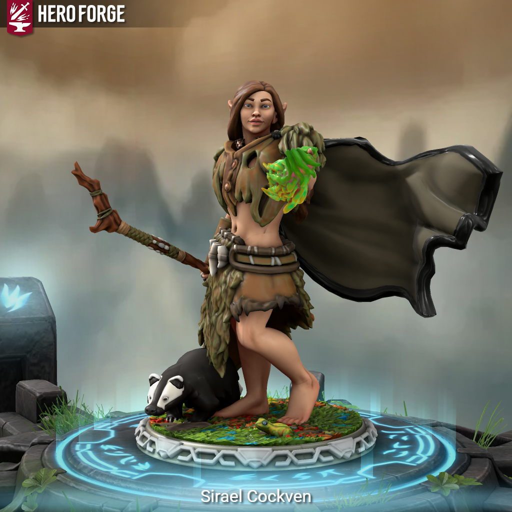

Sirael Cockven
Sirael, ochránkyně zvířat se potulovala lesy a z nějakého důvodu vykročila ze Sucholesa právě do Pełzacze, kde si řekla, že pro jednou by neškodila měkká postel a jídlo připravené lidmi a ne lesem. Družinu podpořila v jejich snaze najít syna France Jeszeta a nadále se k nim připojila.
Dobrodružství, která prožila:
- Hledání ztraceného syna
- - Franci Jeszetovi se ztratil syn, boj s vlky
- Doprovod karavany
- - doprovod zboží do Garagoru, potkání Narmera a Neery
- Průzkum rozbitých chodeb podzemí
- - průzkum podzemních komplexů, na který dostal Emer zakázku, Pertan zde velmi tápal ve tmě, Sirael byla nepěkně překvapena, když zjistila, že v temmých chodbách se to nemusí hemžit jen krysami
- Hledání Neery
- - Neeru někdo unesl, vyšetřování kdo jí unesl, Perlíkův moment boje, setkání s GGG a Alocou


Elf Druid